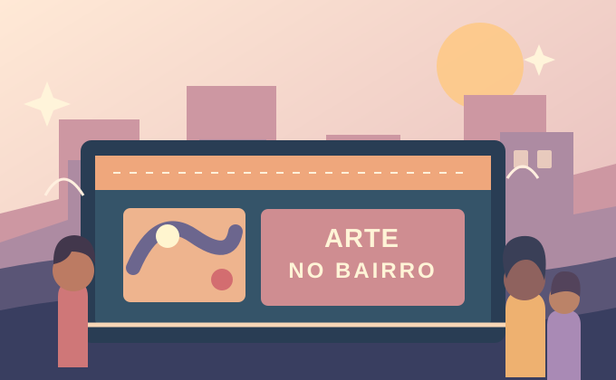

01 · PROBLEMAA arte não falta.
Faltam pontes.
Cidade Tiradentes tem produção cultural ativa, mas artistas podem enfrentar dificuldades para acessar contatos, recursos e divulgação.
Sem redes de apoio, projetos promissores encontram barreiras para alcançar instituições, público e novas oportunidades.

ONDE COMEÇAMOSCidade Tiradentes · Zona Leste, SP
◌Pouca visibilidade
Portfólios e trabalhos nem sempre chegam a possíveis parceiros.
⇄Redes distantes
É difícil se aproximar de produtoras e espaços culturais.
✳Ideias sem apoio
Projetos podem parar por falta de contatos e recursos.
02 · TECNOLOGIAUma plataforma.
Muitas possibilidades.
O TRAMA reúne portfólios, publicações, oportunidades, conversas e projetos em um ambiente digital acessível.
O protótipo funciona localmente; os apoios apresentados são simulações, sem transferências financeiras reais.
01◉Mostre seu talento
Artistas criam portfólios e divulgam suas obras.
→
02✦Encontre oportunidades
Instituições divulgam chamadas, editais e parcerias.
→
03⇄Crie conexões
Perfis conversam e se aproximam de projetos.
→
04✳Impulsione ideias
Apoios fictícios demonstram o potencial de colaboração.
TECNOLOGIAS DO PROTÓTIPO
HTML5CSS3 / FlexboxJavaScriptPythonSQLite
Esta landing page é independente e usa HTML, CSS e JavaScript.03 · OBJETIVOSMenos barreiras.
Mais encontros.
Nosso objetivo é tornar artistas independentes mais visíveis e aproximá-los de quem oferece oportunidades concretas.
Começamos com Cidade Tiradentes e desenhamos uma solução replicável para outros territórios.
01 / VISIBILIDADE✳Valorizar a produção local
Dar espaço para artistas mostrarem seus trabalhos e histórias.
02 / OPORTUNIDADE↗Encurtar distâncias
Facilitar o encontro entre criadores e agentes culturais.
03 / COMUNIDADE⇄Fortalecer redes de apoio
Estimular colaboração e continuidade de projetos criativos.
04 · PÚBLICO-ALVOToda criação merece
ser encontrada.
O foco são artistas independentes e coletivos culturais da Cidade Tiradentes com menor acesso a redes profissionais.
Instituições e apoiadores também participam, criando uma rede de colaboração em torno de projetos.
PARA QUEM CRIASeu trabalho merece chegar mais longe.
Portfólio, feed, projetos e contatos em um só espaço.
Beneficiário principal
05 · BENEFÍCIOSImpacto que nasce
do encontro.
Mais visibilidade e acesso a contatos podem aumentar as chances de projetos artísticos avançarem.
O impacto será avaliado por interações reais no teste, sem apresentar resultados ainda não medidos.
O QUE QUEREMOS TRANSFORMARA arte já move a comunidade. O TRAMA ajuda a conectar seus caminhos.
✳◈✴
PROPOSTA PILOTO · CIDADE TIRADENTES
COMO MEDIRIndicadores de acompanhamento
- Portfólios e projetos publicados
- Conexões e conversas iniciadas
- Candidaturas a oportunidades
- Feedback de artistas participantes
COMO AMPLIARValidar com criadores locais e adaptar a solução a outros bairros de São Paulo.